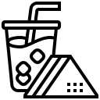
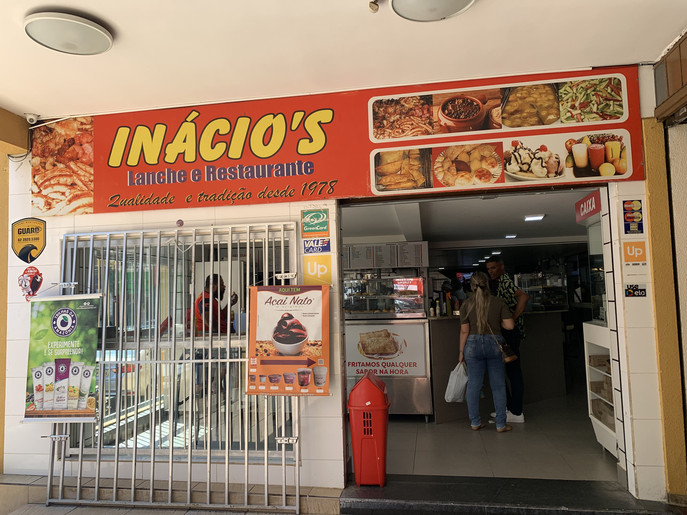

HISTÓRIAS E MEMÓRIAS DO MERCADO MUNICIPAL DE CAMPINAS
Fotojornalismo do Mercado Municipal
O Mercado Municipal de Campinas
História
O Mercado Municipal de Campinas foi construído em 1954,
para atender os moradores de Campinas e dos bairros
adjacentes com o fornecimento de gêneros alimentícios.
Inicialmente, contava com açougues, bares e mercearias que
funcionavam das 6h ás 18h. Com a instalação de grandes
supermercados na cidade, o mercado teve que se adaptar às novas
condições impostas pela concorrência e grande parte dos permissionários,
para garantir a sobrevivência, tiveram que mudar de atividade.
Ver mais
Reforma
Em 30 de junho de 2008, na gestão do prefeito Íris Rezende Machado,
após a reforma, o Mercado de Campinas foi reinaugurado e
passou de 73 para 79 permissionários, sendo que todas as lojas
passaram a ter também uma sobreloja. Com a reforma,
o mercado passou a ter ainda área destinada à cultura e lazer, com eventos constantes.
Ver mais
Salas
Restaurante do Jesus

Inácio's
Lanchonete e Restaurante
Roma
Calçados
Tabacaria Campinas
Presentes & Presentes
Restaurante do Jesus
“ O pessoal dos bairros vizinhos ficam esperando para vir almoçar desde ás 7:30 da manhã”

Inácio's
“Somos tradição no mercado, o nosso diferencial é que todos os produtos fornecidos são feitos aqui”
Carlos Inácio do Nascimento.
Roma
“Acontece muito dos herdeiros não querer dar continuidade e acabar vendendo a loja”
Eneci Chaves do Nascimento Brito.
Tabacaria Campinas
“A minha tabacaria está no Mercado Municipal de Campinas desde 1968”
Décio Viera Fraga Lima.